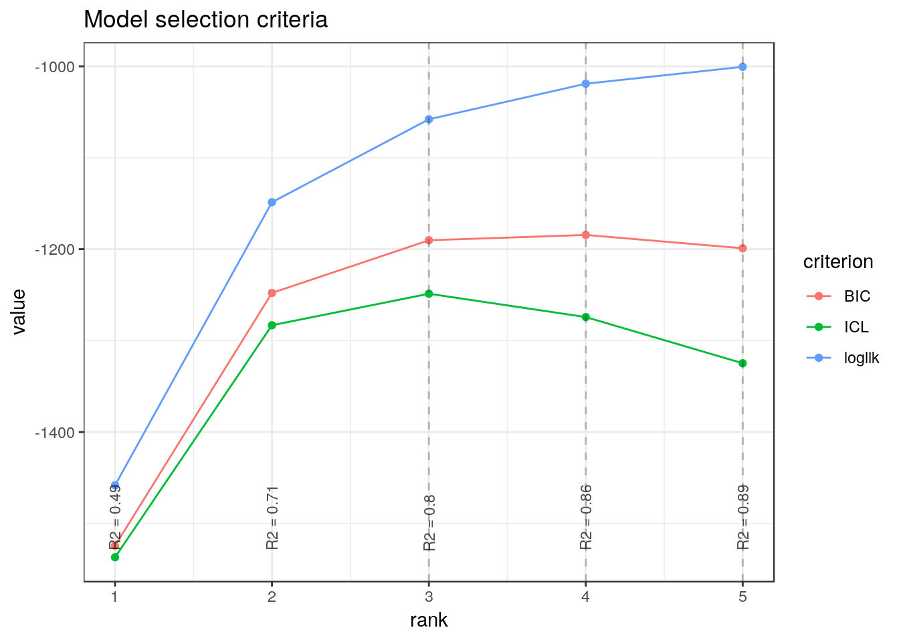
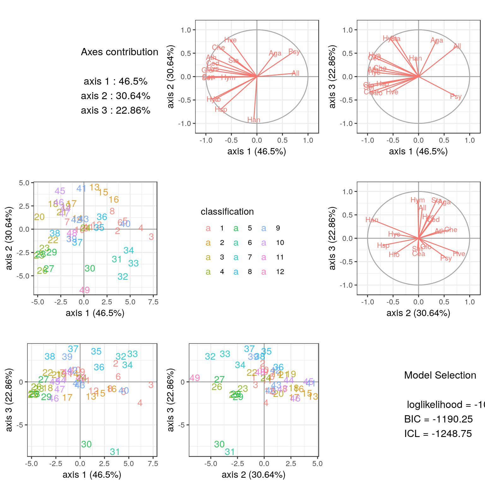
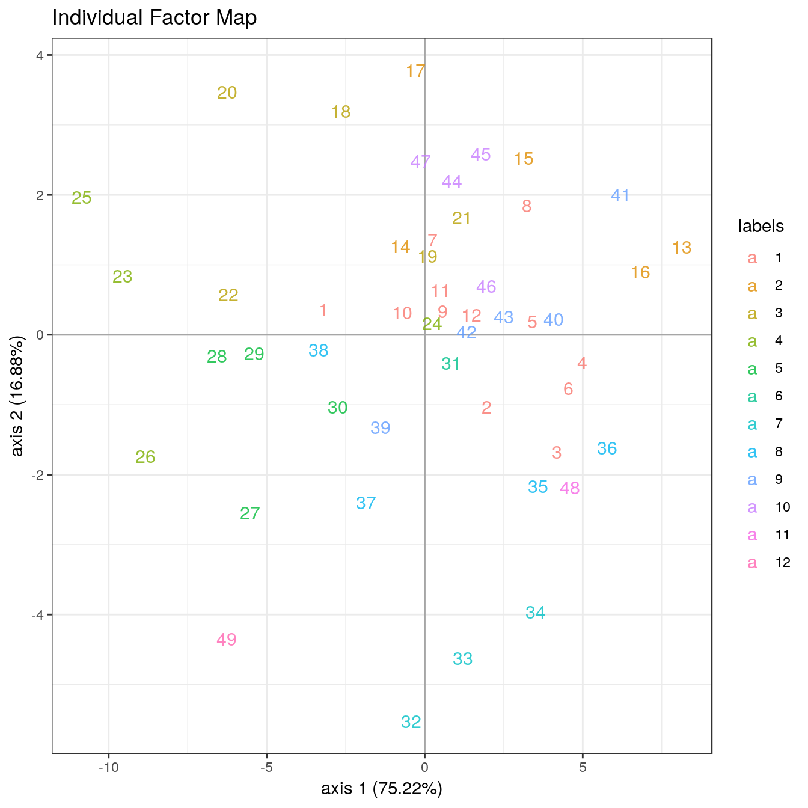
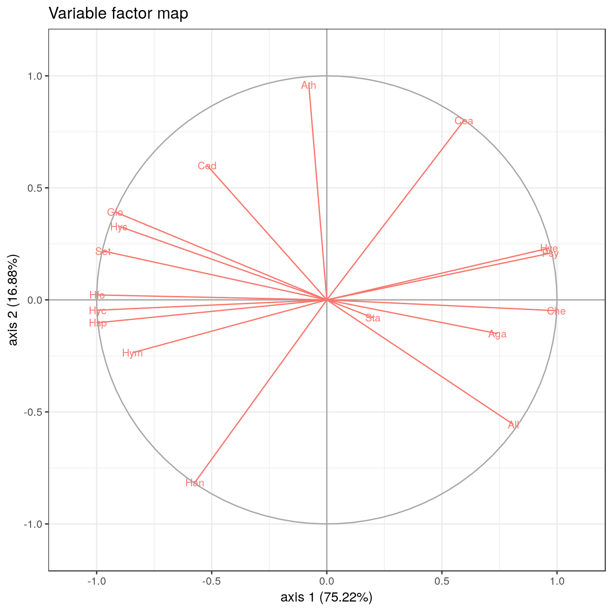

vignettes/PLNPCA_trichoptera.Rmd
PLNPCA_trichoptera.RmdThis vignette intends to illustrate the basical use of the PLNPCA function and the methods accompaning the R6 Classes PLNPCAfamily and PLNPCAfit. To this end, let us consider an ecological data set concerning abundances of Trichopetera species, coupled with some meteological factors that may influence the presence their presence.
See ?PLNmodels::trichoptera for details.
The family of models available in the package belongs to the family of probabilistic PCA models, where the observation are not necessarily Gaussian. In particular, we consider that observations are drawn from a Poisson distribution. All mathematical details can be found in Chiquet, Mariadassou, and Robin (2018).
The model can be written in a hierachical framework where a sample of \(p\)-dimensional observation vectors \(\mathbf{Y}_i\) is related to some \(q\)-dimensional vectors of latent variables \(\mathbf{W}_i\) as follows \[\begin{equation} \label{eq:pca-model} \begin{array}{rcl} \text{latent space } & \mathbf{W}_i \quad \text{i.i.d.} & \mathbf{W}_i \sim \mathcal{N}(\mathbf{0}_q, \mathbf{I}_q) \\ \text{parameter space } & \mathbf{Z}_i = {\boldsymbol\mu} + \mathbf{B}^\top \mathbf{W}_i & \\ \text{observation space } & Y_{ij} | Z_{ij} \quad \text{indep.} & Y_{ij} | Z_{ij} \sim \mathcal{P}\left(\exp\{Z_{ij}\}\right) \end{array} \end{equation}\]
The parameter \({\boldsymbol\mu}\) corresponds to the main effects, \(\mathbf{B}\) to loadings in the parameter spaces and \(\mathbf{W}_i\) to scores of the \(i\)-th observation in the low-dimensional latent subspace of the parameter space. For more details, have a look at our research paper referenced in the package documentation.
The dimension of the latent space \(q\) corresponds to the number of axes in the PCA or, in other words, to the rank of \(\mathbf{B}\mathbf{B}^\intercal\).
We start by adjusting the above model to Trichoptera data set. Here, the matrix of observations \(\mathbf{Y}\) corresponds to the abundance of each species in each trapping night.
## 'AsIs' num [1:49, 1:17] 0 0 0 0 0 0 0 0 0 0 ...
## - attr(*, "dimnames")=List of 2
## ..$ : chr [1:49] "1" "2" "3" "4" ...
## ..$ : chr [1:17] "Che" "Hyc" "Hym" "Hys" ...It seems also natural to add an offset corresponding to the total count per night.
TotalCount <- matrix(
rowSums(trichoptera$Abundance),
nrow = nrow(trichoptera$Abundance),
ncol = ncol(trichoptera$Abundance)
)The model can be fitted with the function PLNPCA for a series of values for \(q\) as follows:
##
## Initialization...
##
## Adjusting 5 PLN models for PCA analysis.
## Rank approximation = 1
Rank approximation = 2
Rank approximation = 3
Rank approximation = 4
Rank approximation = 5
## Post-treatments
## DONE!Note the use of the formula object to specify the model: the vector \(\boldsymbol\mu\) of main effects in the mathematical formulation (one per column species) is specified in the call with the formula ~ 1.
The model.nocov variable is an R6 object with class PLNPCAfamily, which comes with a couple of methods. The most basic is the show/print method, which send a very basic summary of the estimation process:
## --------------------------------------------------------
## COLLECTION OF 5 POISSON LOGNORMAL MODELS
## --------------------------------------------------------
## Task: Principal Component Analysis
## ========================================================
## - Ranks considered: from 1 to 5
## - Best model (regarding BIC): rank = 4 - R2 = 0.86
## - Best model (regarding ICL): rank = 3 - R2 = 0.8Complementary information comes with the plot method:

The critetion \(J\) represents the variational lower bound of the likelihood: in this case, we can see that it is strictly increasing with the number of axes (or subspace dimension). Also note the (approximated) \(R^2\) which is displayed for each value of \(q\) (see the paper for details on how ot is computed). Generally, smoothness of these criteria is an good indicator to check that the optimization process went well.
From this plot, we can see that the best model in terms of BIC or ICL is obtained for \(q=4\) axes. We may extract the corresponding model with the method getBestModel("ICL"). A model with a specific number of axes can be extracted with the getModel(q) method.
myPCA.ICL <- models.nocov$getBestModel("ICL") # if no criteria is specified, the best BIC is used
myPCA.q3 <- models.nocov$getModel(3) The variables myPCA.ICL and myPCA.q3 are other R6Class objects of class PLNPCAfit which in turns owns a couple of methods, mostly for vizualization purposes. The plot_PCA method provides the individual maps and correlation circles as in usual PCA. If an additional classification exist for the observations – which is the case here with the available classification of the trapping nights – , it can be passed as an argument of the function.

With our model (and any pPCA model for count data, where model are not necessarily nested), it is important to look at all the axes at the same time, since the model with \(q=3\) axes is not included in the model with \(q=5\) axes. Indeed, let us vizualize first three axes for the model with \(q=5\) (note that we can control the axes which are plotted):
We can see that the maps for axes (1,2) is slightly different for the model with \(q=3\) from the one obtained for axes (1,2) in the \(q=3\) model.
Also, percentage of variance must be interpreted with care: it sums to 100% but must be put in perspective with the model \(R^2\), giving an approximation of the total percentage of variance explained with the current model.
An original contribution of our model is to let the possibility of taking into account some covariates in the parameter space. Such a strategy often completly changes the interpretation of PCA. Indeed, the covariates are often responsible for some strong structure in the data. The effect of the covariates should be removed since they are often quite obvious for the analyst and may hide some more important and subtile effects.
Basically, the model with covariates extends the one used in the previous section by modeling the parameter space as follows:
\[\begin{equation} \mathbf{Z}_i = {\boldsymbol\mu} + {\boldsymbol\Theta} \mathbf{X}_i^\intercal + \mathbf{B}^\top \mathbf{W}_i, \qquad \mathbf{Z}_i \sim \mathcal{N}({\boldsymbol\mu} + {\boldsymbol\Theta} \mathbf{X}_i^\intercal, \mathbf{B}\mathbf{B}^\top), \end{equation}\]
where \(\mathbf{X}_i\) is a vector of \(d\) covariate for observations \(i\). The \(p \times d\) matrix \(\boldsymbol\Theta\) entails the associated parameters.
In the case at hand, the covariates corresponds to the meteorological variables. Let us try to introduce some of them in our model, for instance, the minimal temperature, the wind and the average cloudiness This can be done thanks to the model formula:
models.cov <- PLNPCA(Abundance ~ 1 + offset(log(TotalCount)) + T_min + Wind + Cloudiness_average, data = trichoptera, ranks = 1:5)##
## Initialization...
##
## Adjusting 5 PLN models for PCA analysis.
## Rank approximation = 1
Rank approximation = 2
Rank approximation = 3
Rank approximation = 4
Rank approximation = 5
## Post-treatments
## DONE!Again, the best model is obtained for \(q=3\) classes.
## --------------------------------------------------------
## COLLECTION OF 5 POISSON LOGNORMAL MODELS
## --------------------------------------------------------
## Task: Principal Component Analysis
## ========================================================
## - Ranks considered: from 1 to 5
## - Best model (regarding BIC): rank = 3 - R2 = 0.73
## - Best model (regarding ICL): rank = 3 - R2 = 0.73The show/print method lists a few summary statistics and useful methods / fields.
## Poisson Lognormal with rank constrained for PCA (rank = 3)
## ==================================================================
## degrees_freedom loglik BIC ICL R_squared
## 119 -963.6623 -1195.226 -1270.007 0.7339339
## ==================================================================
## * Useful fields
## $model_par, $fitted, $latent, $var_par, $optim_par
## $loglik, $BIC, $ICL, $loglik_vec, $degrees_freedom, $criteria
## * Useful S3 methods
## plot(), print(), vcov(), coef(), predict()
## * Additional fields for PCA
## $percent_var, $corr_circle, $scores, $rotation
## * Additional methods for PCA
## $plot_PCA(), $plot_correlation_circle(), $plot_individual_map()Suppose that we want to give a closer look to the first two axes. This can be done thanks to the two methods plot_individual_map and plot_correlation_circle :


PLNPCAfit modelmyPCA.cov is an object of class PLNPCAfit with several fields, in addition to the two plot methods previously mentioned. Among the many fields, the most interesting for the end-user are
## (Intercept) T_min Wind Cloudiness_average
## Che -19.4092492 0.62860393 -0.79222483 -0.022023416
## Hyc -18.1052394 0.43620807 0.13965231 0.037719587
## Hym -2.6382806 -0.10549199 -0.20558352 0.022250198
## Hys -7.8044916 -0.03381157 -0.56867780 0.018272206
## Psy -0.2588776 -0.00864431 0.03612101 -0.002650577
## Aga -2.5488638 -0.12639033 -0.02919774 0.008379871## [,1] [,2] [,3]
## Che 0.50536480 -0.10892115 -0.14831942
## Hyc -0.59440290 -0.12252759 -0.30965163
## Hym -0.02673406 -0.03325373 -0.14447329
## Hys -0.11356574 0.18406229 -0.33371737
## Psy 0.03795112 0.03630391 0.04166303
## Aga 0.05104475 -0.04612667 -0.42855257## [,1] [,2] [,3]
## 1 -3.195751 0.3600483 -0.2449149
## 2 1.954188 -1.0312855 0.4784672
## 3 4.190046 -1.6800055 1.5903460
## 4 4.980261 -0.3997048 2.1878175
## 5 3.413255 0.1883234 0.5911391
## 6 4.549632 -0.7701306 0.5130351That is all for now!
Chiquet, Julien, Mahendra Mariadassou, and Stéphane Robin. 2018. “Variational Inference for Probabilistic Poisson Pca.” The Annals of Applied Statistics 12: 2674–98. http://dx.doi.org/10.1214/18-AOAS1177.